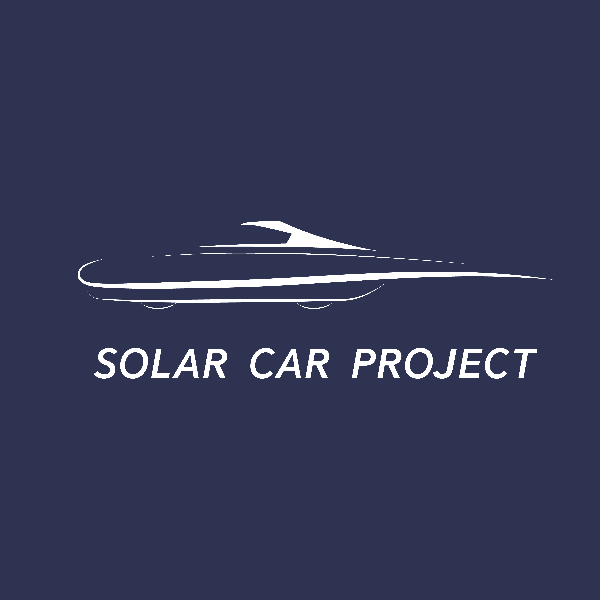

ソーラーカーロゴデザイン
2019.6
制作環境 illustrator
個人制作
サレジオ工業高等専門学校にあるソーラーカープロジェクトの学生から依頼を受けて制作したロゴデザイン。
ソーラーカーのスピード感が表せるように少ない線の数で太さを調節してデザインした。ロゴタイプはAvenir NextのDemi Bold Italicを使用した。
サレジオ工業高等専門学校にあるソーラーカープロジェクトの学生から依頼を受けて制作したロゴデザイン。
ソーラーカーのスピード感が表せるように少ない線の数で太さを調節してデザインした。ロゴタイプはAvenir NextのDemi Bold Italicを使用した。